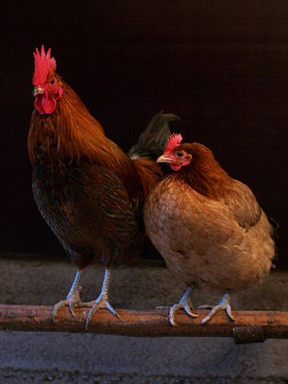

Chicken
The chicken (Gallus of the red junglefowl, is a type of domesticated fowl, originally from Southeastern Asia. Rooster or cock is a term for an adult male bird, and younger male may be called a cockerel. A male that has been castrated is a capon. An adult female bird is called a hen and a sexually immature female is called a pullet.
Originally raised for cockfighting or for special ceremonies, chickens were not kept for food until the Hellenistic period (4th–2nd centuries BC).[1] Humans now keep chickens primarily as a source of food (consuming both their meat and eggs) and as pets.
Therminology
An adult male is a called a 'cock' or 'rooster' (in the United States) and an adult female is called a 'hen'.
Other terms are:
- Bantam
- Slikie
- Polish
- 'Biddy:' a newly hatched chicken
- 'Capon:' a castrated or neutered male chicken
- 'Chick:' a young chicken
General biology and habitat
Chickens are omnivores. In the wild, they often scratch at the soil to search for seeds, insects and even animals as large as lizards, small snakes, or young mice. The average chicken may live for five to ten years, depending on the breed.The world's oldest known chicken was a hen which died of heart failure at the age of 16 years according to the Guinness World Records.
Behavior
Social behaviour
Chickens are gregarious birds and live together in flocks. They have a communal approach to the incubation of eggs and raising of young. Individual chickens in a flock will dominate others, establishing a "pecking order", with dominant individuals having priority for food access and nesting locations. Removing hens or roosters from a flock causes a temporary disruption to this social order until a new pecking order is established. Adding hens, especially younger birds, to an existing flock can lead to fighting and injury.
The sum of two ♥:
1/2 + 1/2 = 1